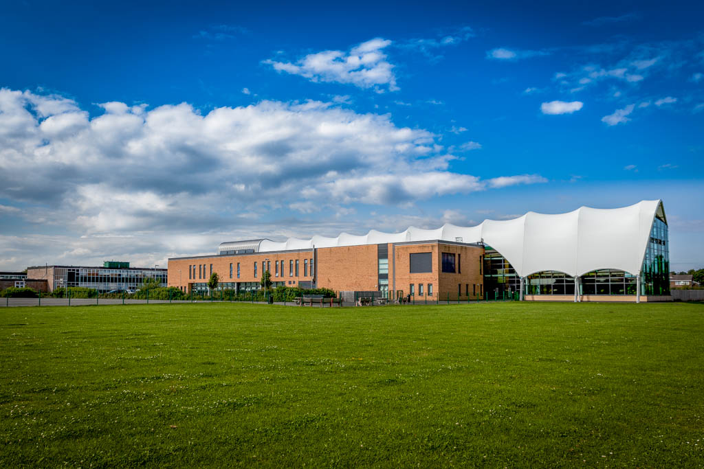

The most insight on the CLV rebuild since announcement
15TH SEP 2023
CramlingtonNews Editors
Parents of pupils at Cramlington Learning Village have received an email concerning the new school construction. Check this page for updates.
On the 13th September, an email was sent to parents concerning the school car park and ground surveys. In the email, this is what was said:
"We were chosen to be part of the government's School Rebuilding Programme in July 2022. Since then there have been many surveys and investigations around our site as part of a feasibility study. The final part of this feasibility study is some ground investigation. This will include drilling 4 boreholes around the school site to assess the underground conditions. This will start on 18th September 2023 and last approximately 4 weeks.
The boreholes will complement desktop surveys and previous ground investigation work that was done when the Junior Learning Village was built.
During this time part of the school car park will be used by the contractors and therefore there will be fewer parking spaces available. Please be mindful of this at pick up and drop off times and if it's busy please be respectful to our neighbours by avoiding the estates close to school. We also ask 6th Form (Advanced Learning Village) students not to bring cars on site during this time."
They then said that plans will go through a consultation process with students and parents before Northumberland County Council. Boreholes will also be dug around the school site next week (18th September) to check if the ground is suitable to build on. 3D plans and designs will be release here next year.
18th September update
The first borehole drilled is in the car park, near the Learning Plaza. This could signify a potential location of the new building - the next borehole will be drilled next week.
20th September update
This happened earlier than expected. The second borehole was drilled on the field next to the Southfield Gardens estate. This also gives another idea of where the new building could be placed.
21st Sep update - there is now another hole drilled on the same field.
29th September update
There has now been 4 boreholes drilled. 1 in the car park and 3 on the playing fields. There is 1 week left of drilling, then plans will be put together soon.